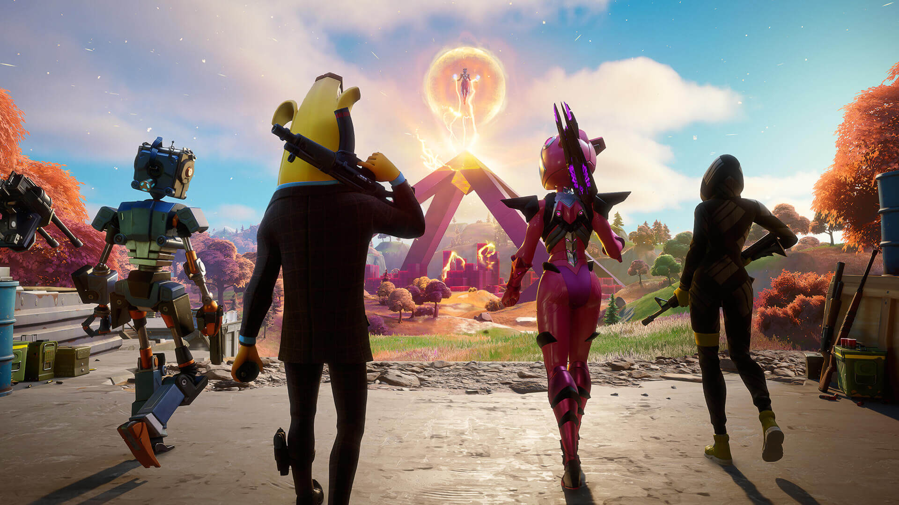
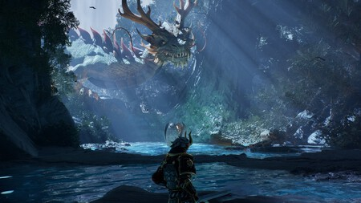
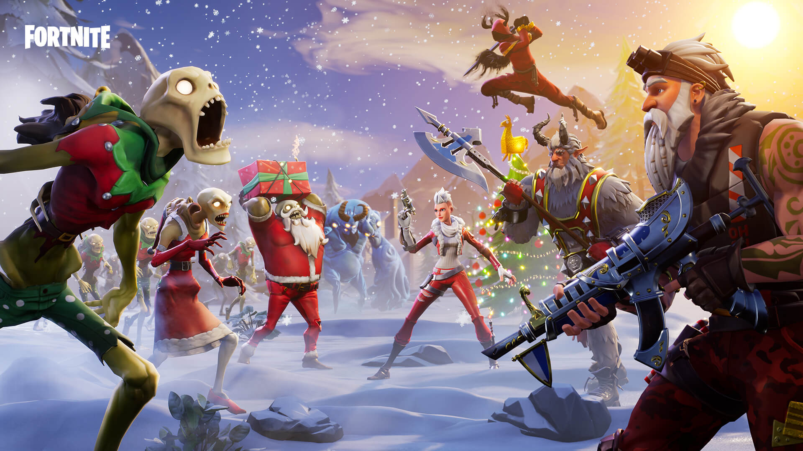
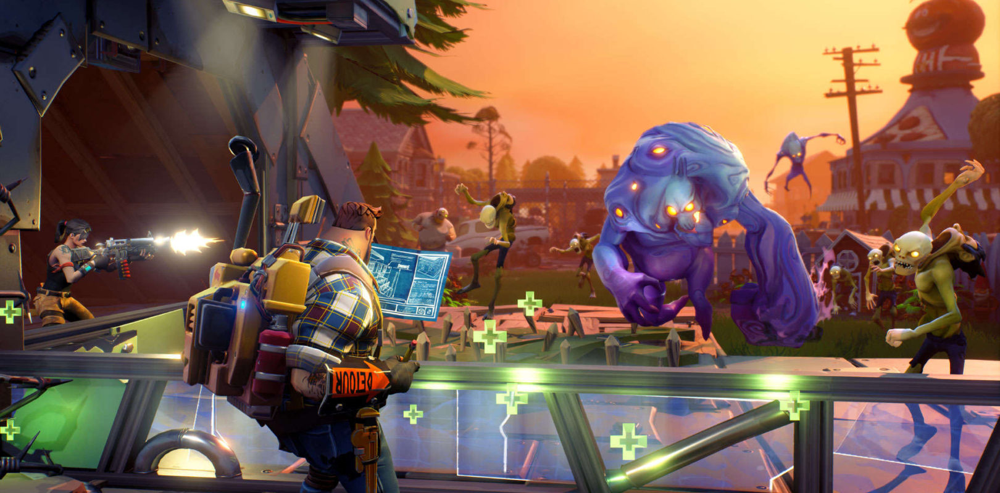
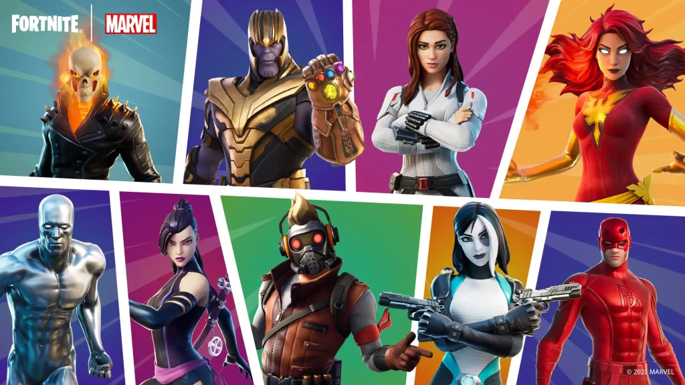
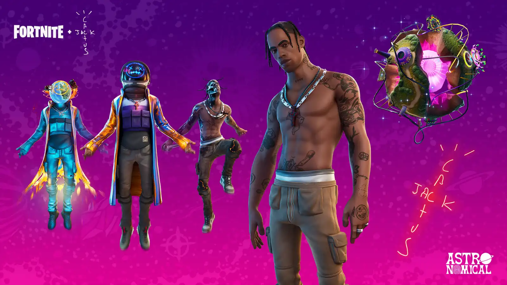
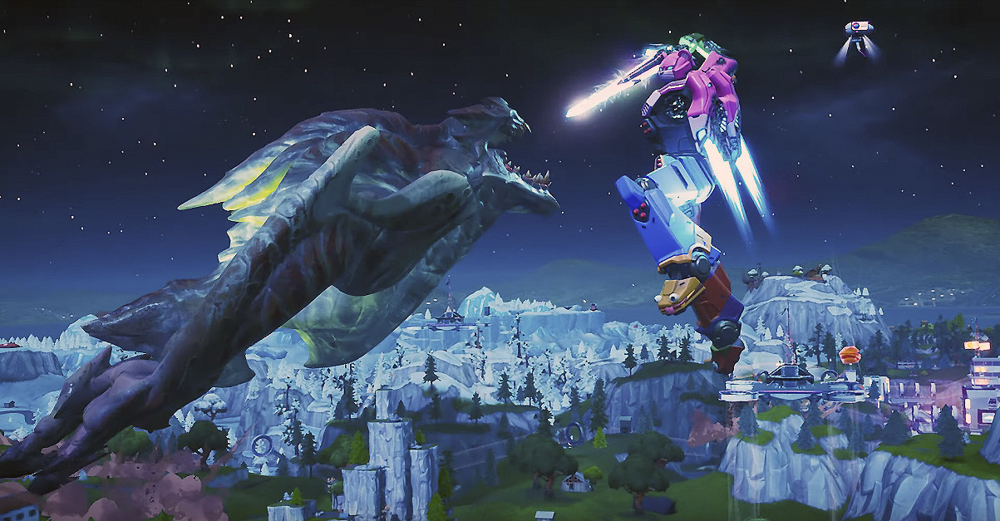

¿Que es Fortnite?
Fortnite Battle Royale es un videojuego multiplataforma gratuito perteneciente al género battle royale desarrollado y publicado por Epic Games. Fue lanzado como un título con acceso anticipado para Microsoft Windows, macOS, PlayStation 4, Xbox One el 26 de septiembre de 2017, seguido de iOS, Android y Nintendo Switch al año siguiente. Así mismo, en 2020, fue lanzado para las consolas de nueva generación, PlayStation 5 y Xbox Series X|S. Es un spin-off del modo de juego Fortnite: Salvar el Mundo y un cooperativo juego de supervivencia con elementos de construcción.
Como juego de Battle Royale, Fortnite Battle Royale cuenta con hasta 100 jugadores, en solitario, dúos, tríos o escuadrones de hasta cuatro jugadores, intentando ser el último jugador con vida eliminando a otros jugadores o evadiéndolos, al tiempo que se mantiene dentro de una zona segura que se encoge constantemente para evitar recibir daños letales provenientes de una tormenta tóxica. Los jugadores deben buscar armas para ganar ventaja sobre sus oponentes. El juego añade el elemento de construcción de Fortaleza; los jugadores pueden romper la mayoría de los objetos en el mundo del juego para ganar recursos que pueden utilizar para construir fortificaciones como parte de su estrategia.
Tras el lanzamiento anticipado de PlayerUnknown's Battlegrounds en marzo de 2017 y su rápido crecimiento, Epic Games vio la oportunidad de crear un modo de batalla real a partir de Fortnite. Epic Games lo lanzó como un modo dentro del juego, pero más tarde lo convirtió en un juego independiente y gratuito, soportado por microtransacciones que no requería el juego base Fortnite.
Fortnite es conocido por su estilo artístico único, sus constantes actualizaciones de temporada y su comunidad de jugadores activa. Es un fenómeno cultural que ha dejado una marca en la industria del entretenimiento.Fortnite es un popular videojuego de batalla real desarrollado por Epic Games. El juego se lanzó en 2017 y ha tenido un gran impacto en la industria del videojuego. A continuación, se detallan algunas características y aspectos destacados:


-
Modo de juego de Battle Royale:
Fortnite Battle Royale es un modo de juego competitivo en el que 100 jugadores compiten en un mapa con el objetivo de ser el último en pie. Los jugadores pueden recolectar recursos, construir estructuras y utilizar una variedad de armas y objetos para ganar la partida.
 -
Modo creativo:
Fortnite Creativo 2.0 es un salto cualitativo para las posibilidades de crear nuestros propios mapas en el battle royale, pero esto es posible gracias a Unreal Editor. Estamos hablando de una aplicación para PC que posee multitud de herramientas y procesos de trabajo característicos de Unreal Engine 5.El modo creativo de Fortnite permite a los jugadores construir sus propias islas y crear sus propios juegos personalizados. Es una característica única que fomenta la creatividad y la imaginación de los jugadores.

Así pues, se nos pone en bandeja la opción de importar recursos personalizados como modelados, materiales, efectos visuales, Sequencer y rig de control. Es decir, es una aproximación al proceso de creación que llevan a cabo los desarrolladores de Epic Games con la obra. Todos los mecanismos del modo Creativo de Fortnite están incluidos, por lo que la transición es mucho más sencilla.
Si bien todavía estamos hablando de una app en fase beta, ya son muchas las opciones que podemos llevar a cabo.
Cómo comenzar a crear en Fortnite Creativo 2.0 Si eres un recién iniciado en el mundo del desarrollo y la creación de experiencias, lo cierto es que Epic Games te lo pone realmente fácil. La empresa ha habilitado muchísimas guías para orientarte en tus primeros pasos. Aquí tienes algunas de las más imprescindibles:
Si quieres sacarle el máximo partido a las experiencias y mapas que crees con Unreal Editor, atento porque Epic Games ha presentado la Economía de los creadores 2.0. Los creadores de contenido habilitados recibirán pagos por participación, con una distribución proporcional, y ya puedes inscribirte para llevarte tu trozo del pastel. Es decir, el 40% de los ingresos netos por la Tienda de objetos y las compras realizadas en el juego con dinero real se repartirá entre todos los editores de las islas.
Se hará mensualmente, pero dependerá de factores como la popularidad de la isla, la participación y la atracción de nuevos jugadores. Estamos hablando de un sistema independiente del programa Apoya a un creador y dicho dispositivo ha sido eliminado por completo. Por tanto, ya no hace falta animar a la audiencia a que usen el código de creador, ya que el apoyo económico llega con el simple hecho de jugar en el mapa que más nos guste.

Volver al Inicio -
Salvar el Mundo
Salvar al mundo es uno de los tres modos de juego que ofrece Fortnite, el exitoso título de Epic Games, para consolas y PC. Se trata de un modo de juego no gratuito en el que tendrás que acabar con una gran cantidad de monstruos mediante una jugabilidad un tanto diferente al famoso modo battle royale del juego.
Salvar al mundo es un modo de juego de Fortnite. Ofrece una campaña JCE cooperativa de acción y construcción en la que puedes jugar con amigos para terminarla. Tu objetivo no será otro que contener hordas de monstruos en misiones a la vez que recorres el mundo del juego. Aquí puedes construir, fabricar armas, buscar botín y subir de nivel a tus personajes.
¿Cómo se juega el modo Salvar al mundo?En Salvar al mundo, tendrás que realizar misiones y eventos, lo que te permitirá descubrir nuevas localizaciones, conseguir experiencia y encontrar nuevos personajes. Los dos últimos puntos son realmente importantes, pues te permitirán desbloquear mejoras tanto para tus héroes como para los personajes de apoyo que encuentres.
Al principio, podrás escoger el tipo de héroe con el que jugarás de entre las siguientes clases: soldado, ninja, trotamundos y constructor. Piensa muy bien cuál elegirás, pues en este tipo de juegos es muy importante que estés cómodo con el estilo del personaje que hayas escogido porque las cosas se irán complicando cada vez más y más. De hecho, en el caso de que juegues solo, tendrás que tener en cuenta hasta le elección de personajes, armas y trampas que hagas porque todo influirá para determinar si vences o no las diferentes oleadas.
Consejos para jugar el modo Salvar al mundoAunque puedes jugar solo, al tratarse de una campaña cooperativa, lo ideal es que lo hagas con otros jugadores. Si lo haces, procura que el equipo sea lo más equilibrado posible. Como en el modo battle royale, inspecciona todo lo posible para encontrar recursos útiles. Las minas son una localización perfecta para ello. Por otra parte, ten muy presente que el ciclo día/noche de este modo de juego es efectivo, por ello, los enemigos son más fuertes por la noche. Por último, si juegas solo, evita dar munición a tu equipo, pues no harán un uso lógico de ella.

Volver al Inicio -
Colaboraciones y eventos épicos:
Fortnite ha colaborado con numerosas franquicias populares, incluyendo Marvel, Star Wars, y muchos más. Además, el juego organiza eventos en vivo que han sido seguidos por millones de jugadores en todo el mundo.

Una de las características más notables del juego es su gran número de colaboraciones con temas de la cultura popular, entre las cuales destacan, series de televisión, películas, marcas de ropa, artistas musicales, streamers famosos, entre otros dejándolo así como una de los videojuegos con más relevancia y más impacto en la cultura de los jugadores con más de 70 colaboraciones diferentes.
Un ejemplo de dichos crossovers es una colaboración musical en conjunto con el rapero, compositor y productor musical estadounidense Travis Scott, donde se presenta por segunda vez un concierto en vivo en el juego. A diferencia del primer concierto de Marshmello, el cual se ubicó en una parte del mapa del Capítulo 1, en esta ocasión el concierto tuvo mayor espacio en el juego. También aparecieron las conocidas cabezas inflables del artista en distintas partes de esta y la aparición de un meteoro que tenía la forma de Astroworld (haciendo referencia al álbum del artista).
Eventos en Vivo y Simultaneo
Los eventos en vivo son eventos que ocurren dentro del partido y que se conectan a la historia de Fortnite. Por lo general, ocurren en la mitad, cerca del final, de la temporada. Algunos eventos implican apagar el rodaje, para que todos puedan disfrutar del evento. A veces, la compilación todavía está habilitada, por lo que los jugadores pueden compilar y obtener una mejor vista.

Volver al Inicio -
Disponibilidad multiplataforma:
El juego está disponible en diversas plataformas, como PC, consolas y dispositivos móviles. Los jugadores pueden jugar con amigos sin importar la plataforma en la que estén.
Volver al Inicio